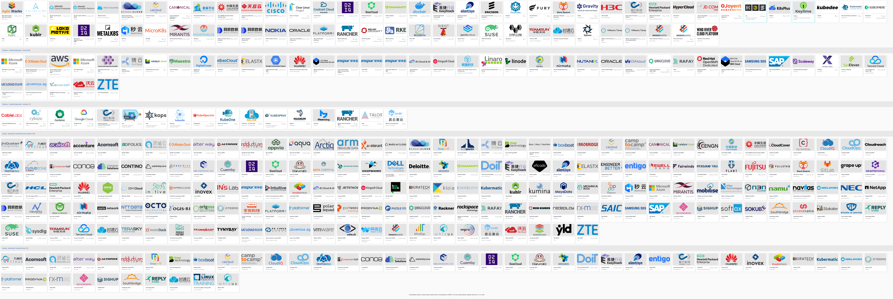
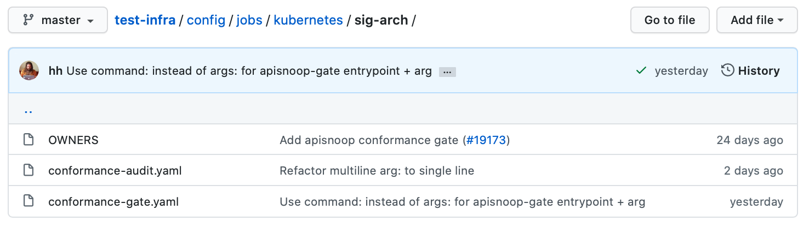
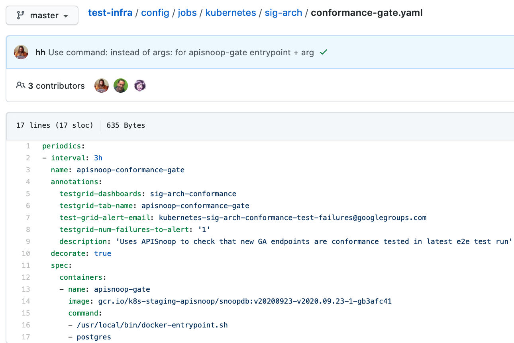
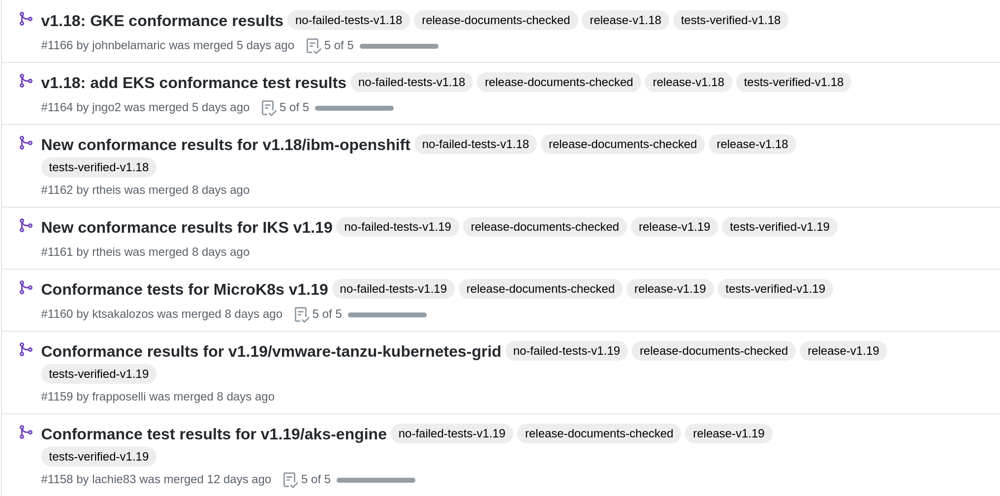

Contributing to Kubernetes Conformance Coverage
ii.coop
Created: 2021-03-12 Fri 13:42
About ii
Coding Coop in New Zealand
- Focus on Cooperative Coding
- Pairing is Sharing
- ii.coop
People
- Hippie Hacker
- Caleb Woodbine
- Zach Mandeville
- Stephen Heywood
- Berno Kleinhans
- Riaan Kleinhans
INTRO
What is Kubernetes Conformance?
CNCF Kubernetes Conformance ensures
… that every vendor’s version of Kubernetes supports the required APIs, as do open source community versions
Conformance website

k8s-conformance repo
https://github.com/cncf/k8s-conformance

Why is Kubernetes Conformance important?
Conformance with Kubernetes ensures:
- portability of workloads
- stable APIs behave the same everywhere
- freedom from vendor lock-in
- consistency with APIs
Who can meet your k8spectations?
Currently, there are ~67 certified distributions.
Click Certified K8s/KCSP/KTP link on the left

How do I certify my k8s distribution?
Creating your Conformance Submission
cncf/k8s-conformance /instructions.md
vX.Y/$dir/README.md: how to reproduce your results. vX.Y/$dir/e2e.log: Test log output (from Sonobuoy). vX.Y/$dir/junit_01.xml: Machine-readable test log (from Sonobuoy). vX.Y/$dir/PRODUCT.yaml: Details of your PRODUCT
Document How to Bring test your cluster
Example README.md with instructions:
cncf/k8s-conformance/tree/master/v1.18/kind
time ./kind-run.sh 1.18.0
Sonobuoy Logs
sonobuoy logs -f
Watch Sonobuoy
watch kubectl get all --all-namespaces
Sonobuoy Results
find v1.*/plugins/e2e/results/global
v1.18.0_2020-10-20_14:34.00/plugins/e2e/results/global
v1.18.0_2020-10-20_14:34.00/plugins/e2e/results/global/junit_01.xml
v1.18.0_2020-10-20_14:34.00/plugins/e2e/results/global/e2e.log
Submit cncf/k8s-conformance results
Fork+Branch+Remote
git clone https://github.com/cncf/k8s-conformance
cd k8s-conformance
git remote add ii git@github.com:ii/k8s-conformance
git checkout -b notkind-v1.18
Copy results into place
cp -a ../notkind v1.18/notkind
cp -a ../v1.*/plugins/e2e/results/global/* v1.18/notkind
git status
Commit and Push Results
git add v1.18/notkind
git commit -m 'Conformance results for v1.18/notkind'
git push ii notkind-v1.18
Open a PR to cncf/k8s-conformance
Contents of the PR
git diff --name-only origin/master
v1.18/notkind/PRODUCT.yaml
v1.18/notkind/README.md
v1.18/notkind/e2e.log
v1.18/notkind/junit_01.xml
DEEP DIVE
Gaps in Kubernetes Conformance Coverage
- Identify
- Close
- Prevent
Identifying Gaps in Kubernetes Conformance Coverage
https://apisnoop.cncf.io

snoopDB
Database Setup Schemas:
- public
- from k/k swagger.json
- conformance
- CI job api-audit.logs
- testing
- from live in-cluster usage
How can I deploy snoopdb?
MANY ways to deploy, one kind way:
git clone https://github.com/cncf/apisnoop
cd apisnoop/kind
kind create cluster --config=kind+apisnoop.yaml
kubectl wait --for=condition=Ready --timeout=600s \
--selector=app.kubernetes.io/name=auditlogger pod
Schemas
Name | Size | Description
-------------+---------+----------------------------------------------------------
audit_event | 884 MB | every event from an e2e test run, or multiple test runs.
open_api | 5080 kB | endpoint details from openAPI spec
Loading K8s API into SQL
swagger_url = K8S_GITHUB_REPO + commit_hash + \
'/api/openapi-spec/swagger.json'
openapi_spec = load_openapi_spec(swagger_url)
OpenAPI Table
- K8s API definition
- shape of API
\d open_api ; describe table
Column | Type |
--------------+-----------------------------+
release | text |
release_date | timestamp without time zone |
endpoint | text |
level | text |
category | text |
path | text |
k8s_group | text |
k8s_version | text |
k8s_kind | text |
k8s_action | text |
deprecated | boolean |
description | text |
spec | text |
PSQL Example Query
Newly Stable Endpoints
export PGUSER=apisnoop PGHOST=localhost
psql -c "with endpoint_and_first_release as (
select endpoint, level,
(array_agg(release order by release::semver))[1]
as first_release
from open_api group by level, endpoint)
select level, endpoint, first_release
from endpoint_and_first_release
where first_release = '1.20.0' and level='stable';"
level | endpoint | first_release
--------+------------------------------+---------------
stable | getInternalApiserverAPIGroup | 1.20.0
(1 row)
Audit CI logs in a DB
- SnoopDB loads recent CI audit logs
- Query Test Job K8s API Usage
kind-conformance-audit job
testgrid.k8s.io/sig-arch-conformance#kind-conformance-audit

AuditEvent Table
- K8s API definition
- shape of API
\d audit_event ; describe table
Column | Type |
---------------+-----------------------------+
release | text |
release_date | text |
audit_id | text |
endpoint | text |
useragent | text |
test | text |
test_hit | boolean |
conf_test_hit | boolean |
data | jsonb |
source | text |
id | integer |
ingested_at | timestamp without time zone |
Prow Job Audit Logs
By default we load recent conformance prow jobs
select distinct release,
split_part(source,'/',8) as "prow-job"
from audit_event
where source like 'https://prow.k8s.io%';
release | prow-job
---------+--------------------------------------
1.20.0 | ci-kubernetes-gce-conformance-latest
1.20.0 | ci-kubernetes-e2e-gci-gce
(2 rows)
e2e.test framework support
- UserAgent updated to include test name
- AuditLogs include test and operation
Conformance Tests
select distinct test
from audit_event
where test ilike '%Conformance%'
limit 5
;
test
----------------------------------------------------------------------------------------------------------------------------------------------------------------------
[sig-storage] Projected secret should be able to mount in a volume regardless of a different secret existing with same name in different namespace [NodeConformance]
[sig-storage] Subpath Atomic writer volumes should support subpaths with configmap pod [LinuxOnly] [Conformance]
[sig-network] Services should provide secure master service [Conformance]
[sig-network] Networking Granular Checks: Pods should function for intra-pod communication: udp [NodeConformance] [Conformance]
[sig-api-machinery] Secrets should fail to create secret due to empty secret key [Conformance]
(5 rows)
New Endpoints in 1.20

Coverage at Time of Release
https://apisnoop.cncf.io/conformance-progress

Current Conformance Debt
https://apisnoop.cncf.io/conformance-progress

Closing gaps in Kubernetes Conformance Coverage
Identifying an untested features
SELECT
endpoint,
-- k8s_action,
-- path,
-- description,
kind
FROM testing.untested_stable_endpoint
where eligible is true
and category = 'core'
order by kind, endpoint desc
limit 5;
endpoint | kind
----------------------------------+---------
createCoreV1NamespacedPodBinding | Binding
createCoreV1NamespacedBinding | Binding
replaceCoreV1NamespacedEvent | Event
readCoreV1NamespacedEvent | Event
patchCoreV1NamespacedEvent | Event
(5 rows)
Discover docs on target endpoints
Describe the outline
To test through the lifecycle of a resource:
- Create a RESOURCENAME
- Patch the RESOURCENAME
- Get the RESOURCENAME
- List all RESOURCENAMEs
- Delete RESOURCENAME
Write a mock test
Prove coverage change by exercising the endpoints:
fmt.Println("creating a Pod")
// ... declare the test pod resource
_, err = ClientSet
.CoreV1().Pods(testNamespaceName)
.Create(context.TODO(),
&testPod,
metav1.CreateOptions{})
if err != nil {
fmt.Println(err, "failed to create Pod")
return
}
Validate the coverage change
List endpoints hit by the test:
select * from testing.endpoint_hit_by_new_test;
useragent | endpoint | hit_by_ete | hit_by_new_test
-------------------+-------------------------------+------------+-----------------
live-test-writing | createCoreV1NamespacedPod | t | 4
live-test-writing | deleteCoreV1NamespacedPod | t | 4
live-test-writing | listCoreV1PodForAllNamespaces | t | 4
(3 rows)
Display endpoint coverage change
select change_in_number
from testing.projected_change_in_coverage;
change_in_number
------------------
0
(1 row)
Submitting a mock ticket
- exported as Markdown
- submitted as GitHub issues.

Preventing gaps in Kubernetes Conformance Coverage
testgrid.k8s.io

sig-arch / conformance prow jobs
kubernetes/test-infra config/jobs/kubernetes/sig-arch

apisnoop-conformance-gate
Eventually Release Blocking Conformance Job

Job Fails and Emails
Any new gaps in coverage are detected
name: apisnoop-conformance-gate
annotations:
testgrid-dashboards: sig-arch-conformance
testgrid-tab-name: apisnoop-conformance-gate
test-grid-alert-email: kubernetes-sig-arch-conformance-test-failures@googlegroups.com
testgrid-num-failures-to-alert: '1'
description: 'Uses APISnoop to check that new GA endpoints are conformance tested in latest e2e test run'
DEEP DIVE Summary
Gaps in Kubernetes Conformance Coverage
- Identify
- using apisnoop.cncf.io + snoopdb
- Close
- using humacs in-cluster workflow
- Prevent
- release blocking jobs
Verifying Conformance Submissons
prow.cncf.io
Remember our PR submission from earlier?
Results submitted

CNCF CI comments

Informational labels

Certified distributions

Certified Logo (tm)